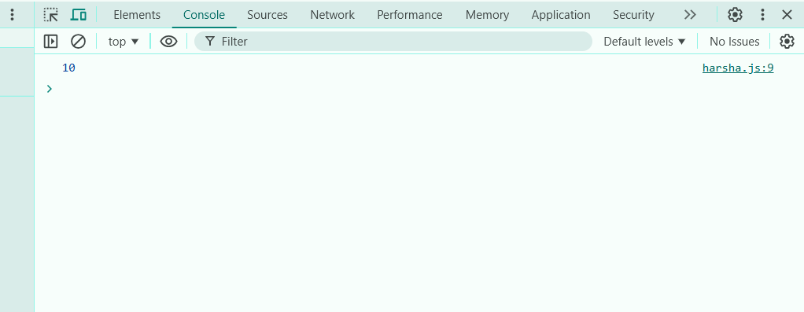

1 Basic Callback Execution // Write a function called processNumber that accepts a number and a callback function. // The processNumber function should double the number and pass the result to the callback function.
function processNumber(number, callback) {
const doubled = number * 2;
callback(doubled);
}
function harsha(a){
console.log(a)
}
processNumber(5,harsha)

/ 2. Callback with Array Iteration // Write a function called forEachElement that takes an array and a callback function. // The function should iterate over the array and execute the callback function for each element, passing the element as an argument.
function forEachElement(array, callback) {
callback(array);
}
function harsha(a){
console.log(a)
}
forEachElement([124,12,24,43],harsha)
// 3. Simple Delayed Callback // Write a function sayHello that accepts a name and a callback function. // Use setTimeout to wait for 1 second and then call the callback function, // passing the message "Hello, [name]!" (replace [name] with the provided name).
function sayHello(name,callback){
setTimeout(()=>callback(name),1000)
}
function har(name){
console.log(`Hello, ${name}`)
}
sayHello("harsha",har)
// 4. Callback on Condition // Write a function checkEven that accepts a number and two callback functions. // If the number is even, call the first callback with the number. If the number is odd, // call the second callback with the number.
function sayHello(name,callback){
setTimeout(()=>callback(name),1000)
}
function har(name){
console.log(`Hello, ${name}`)
}
sayHello("harsha",har)
// 5. Sequential Callbacks // Write a function performTasks that accepts a number and two callback functions. // First, add 5 to the number using the first callback, and then multiply // the result by 2 using the second callback. Log the final result to the console.
function performTasks(number, addCallback, multiplyCallback) {
addCallback(number, (added) => {
multiplyCallback(added, (result) => {
console.log(result);
});
});
}
performTasks(5, (num, callback) => callback(num + 5), (num, callback) => callback(num * 2));
const arr = ['a', 'b', 'c'];
console.log(arr.filter(str => str.toUpperCase()))